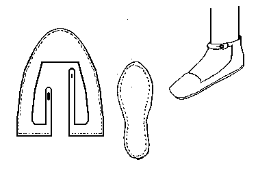

Ankle Latched Shoe (c1000-1200)
Found in both
Norris and
Wilson, and may be part of the basis for using the "Mary Jane" style shoe. Made with a rand. The basic design is MY estimate of the pattern, and may not be absolutely accurate.
Return to
[Index] or
[Next]
Footwear of the Middle Ages - Historical Shoe Designs/Number 24, by I. Marc Carlson. Copyright 1996
This page is given for the free exchange of information, provided the Author's Name is included in all future revisions, and no money change hands, other than as expressed in the Copyright Page.